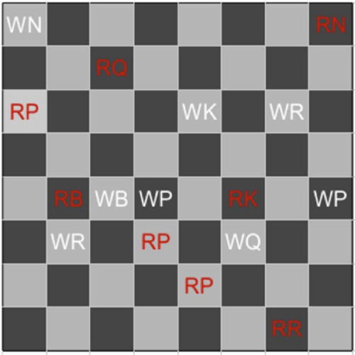
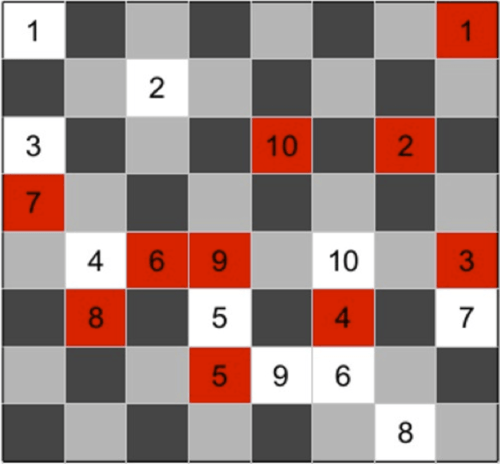
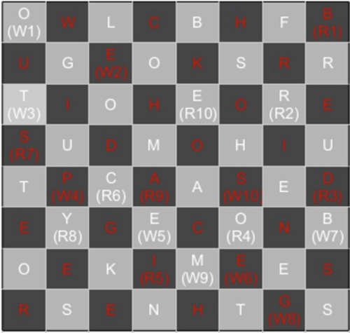

There are 16 puzzles, corresponding to 16 chess pieces: 8 red pieces and 8 white pieces. Each puzzle answer is a two word phrase. The first word stars with a letter from A to H and is 1 to 8 letters long. There is one clue for each letter A through H for the 8 chess pieces of each color. All the second words are 4 letters long. Each clue tells you two things: the position on the chess board for that piece (first letter indicates column, length indicates row) and the letters that should be written into the like colored squares of that column. A few of these letters are given initially to help confirm the letter placement.
The solvers reconstruct the duel according to the instructions given in the flavortext and then read off the letters corresponding to the squares that the knights visited to get the answer, BORED TO PIECES BY GAMES, a weakness of the beast.
| Chess Piece | Answer | Initial board position |
|---|---|---|
| White Pawn | DARK OMEN | D4 |
| White Pawn | HOBO BOBO | H4 |
| Red Pawn | ACTIVE USER | A6 |
| Red Pawn | DEN CHAI | D3 |
| Red Pawn | ED WYNN | E2 |
| White Knight | ARCHDUKE OTTO | A8 |
| Red Knight | HOSPITAL BEDS | H8 |
| White Bishop | CAPS LOCK | C4 |
| Red Bishop | BABY WIPE | B4 |
| White Rook | BAD BOYS | B3 |
| White Rook | GLUTEN FREE | G6 |
| Red Rook | G RING | G1 |
| White Queen | FLU SHOT | F3 |
| Red Queen | CUTTING EDGE | C7 |
| White King | ENERGY BEAM | E6 |
| Red King | FIRE HOSE | F4 |
|  |
Following the instructions to recreate the duel gives the following paths for each knight.
|  |
Finally, you need to fill in the squares with the proper letters. The second word of each answer fills in the 4 squares on each column. White pieces fill the light squares, red pieces fill the dark squares. The initial letters in the picture should help solvers fill in the letters correctly.
|  |
Reading the letters in the squares in the order they were traversed (R1, W1, R2, W2, R3, etc.) gives the final answer, BORED TO PIECES BY GAMES. The beast was watching the knights spar and got so bored by the spectacle that she left.